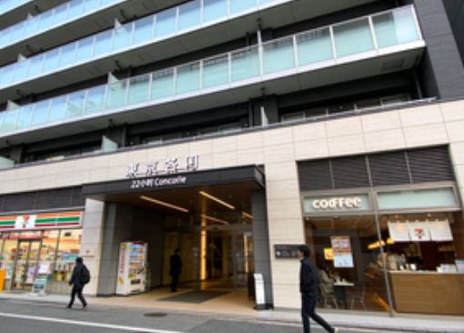

中京区（Nakagyo-ku）賃貸情報
中京区は京都市の中心部に位置する行政区で、四条河原町・烏丸四条といった京都屈指の繁華街があり、商業・ビジネスの中心地として栄えている。地下鉄烏丸線と東西線が交差する烏丸四条駅は京都最大の交通拠点の一つで、全国各地への移動が容易。
繁華街エリアは24時間営業の飲食店やショッピング施設が密集し、夜間の賑わいも大きい。一方、御池通沿いはオフィスビルが多く、ビジネスマンの居住者も多い。物件は主に小規模なワンルームや1Kが中心で、広い物件は少なく賃料が高いのが特徴。
中京区の特徴
- 特徴：京都の繁華街・ビジネス中心地
- メリット：交通・ショッピング・飲食が至便・夜間の賑わいがある
- デメリット：賃料高騰・物件が狭い・夜間の騒音が多い
- 賃料例：1R約70,000円〜、1K約85,000円〜、1LDK約120,000円〜
推奨物件タイプ

四条河原町徒歩3分 1R：約72,000円。高層マンションの物件で、繁華街直結の立地。24時間コンシェルジュサービスがある。
烏丸四条駅徒歩5分 1K：約88,000円。築浅の物件で、エレベーター・駐車場が完備。近隣にオフィスビルが多くビジネスマンに適している。
御池通沿い 1LDK：約130,000円。オフィス街の隣に位置し、静かな環境でありながら利便性が高い。南向きの部屋で採光が良好。